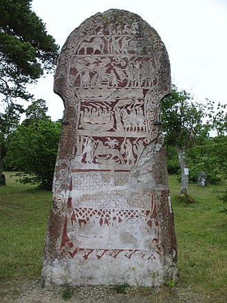

Vikings is the modern name given to seafaring people originally from Scandinavia(present-day Denmark, Norway , and Sweden ) who from the late to the late centuries raided, pirated, traded and settled throughout parts of Europe. They also voyaged as far as the Mediterranean, North Africa , the Middle East,Greenland , and Vinland (present-day Newfoundland in Canada,North America ). In their countries of origin, and some of the countries they raided and settled in, this period is popularly known as the Viking Age, and the term "Viking" also commonly includes the inhabitants of the Scandinavian homelands as a whole. The Vikings had a profound impact on the early medieval history of Scandinavia, the British Isles, France, Estonia, and Kievan Rus'
he Vikings spoke Old Norse and made inscriptions in runes. For most of the period, they followed the Old Norse religion, but later became Christians. The Vikings had their own laws, art and architecture. Most Vikings were also farmers, fishermen, craftsmen and traders. Popular conceptions of the Vikings often strongly differ from the complex, advanced civilisation of the Norsemen that emerges from archaeology and historical sources. A romanticised picture of Vikings as noble savages began to emerge in the 18th century; this developed and became widely propagated during the 19th-century Viking revival.Perceived views of the Vikings as violent, piratical heathens or as intrepid adventurers owe much to conflicting varieties of the modern Viking myth that had taken shape by the early 20th century. Current popular representations of the Vikings are typically based on cultural clichés and stereotypes, complicating modern appreciation of the Viking legacy. These representations are rarely accurate—for example, there is no evidence that they wore horned helmets, a costume element that first appeared in the 19th century.
One theory suggests that the word's origin is from the Old English wicing and the Old Frisian wizing that are almost 300 years older, and probably derive from wic, related to the Latin vicus "village, habitation".Another less popular theory is that víking came from the feminine vík, meaning "creek, inlet, small bay"
It has been suggested that the word viking may be derived from the name of the historical Norwegian district of Víkin, meaning "a person from Víkin", but people from the Viken area were called víkverir, ('Vík dwellers'), not "Viking", in Old Norse manuscripts. The explanation could explain only the masculine grammatical gender (víkingr) and not the feminine (víking); the masculine is more easily derived from the feminine than the other way around.
Another etymology that gained support in the early 21st century derives Viking from the same root as Old Norse vika, f. 'sea mile', originally meaning 'the distance between two shifts of rowers', from the root *weik or wîk, as in the Proto-Germanic verb wîkan, 'to recede'.This is found in the early Nordic verb *wikan, 'to turn', similar to Old Icelandic víkja (ýkva, víkva) 'to move, to turn', with "well-attested nautical usages", according to Bernard Mees.This theory is better attested linguistically, and the term most likely predates the use of the sail by the Germanic peoples of northwestern Europe, because the Old Frisian spelling Witsing or Wīsing shows that the word was pronounced with a palatal k and thus in all probability existed in North-Western Germanic before that palatalisation happened in the 5th century or before (in the western branch).
The Old Norse feminine víking (as in the phrase fara í víking) may originally have been a long-distance sea journey characterised by the shifting of rowers, and a víkingr (masculine gender) would originally have been a participant on such a sea journey. In that case, the idea behind it seems to be that the tired rower moves aside on the thwart when he is relieved by the rested rower. This implies that the word Viking was not originally connected to Scandinavian seafarers, but assumed this meaning when the Scandinavians began to dominate the seas.Even the word vikingr did not necessarily possess negative overtones, nor was it always associated with violence, and only in the post-Viking age would negative overtones be attached to the word.
In the Middle Ages viking came to mean Scandinavian pirate or raider
The earliest reference to wicing in English sources is from the Épinal-Erfurt glossary which dates to around 700. The glossary's Latin translation for wicing is piraticum, or pirate in modern English. Whereas the first known attack by Viking raiders in England was at Lindisfarne about 93 years later.In Old English, the word wicing appears in the Anglo-Saxon poem, Widsith, probably from the 9th century. The word was not regarded as a reference to nationality, with other terms such as Norþmenn (Northmen) and Dene (Danes) being used for that. In Asser's Latin work, The Life of King Alfred, the Danes are referred to as pagani (pagans); historian Janet Nelson asserts that pagani has become 'the Vikings' throughout the standard translation of this work, even though there is "clear evidence" that it was used as a synonym for Danes, while Eric Christiansen avers that it is a mistranslation made at the insistence of the publisher.The word wicing does not occur in any preserved Middle English texts.